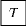

We are at a point where the oracle method of quantum computation is quite limiting.
You've most likely noticed a pattern in our computation using these quantum oracles.
While these algorithms are an amazing introduction to the complications of quantum algorithms, they lack
applicability to real world problems. I even remember John Watrous describing the problem of one of these algoirthms, and saying something along the lines of
"It may be hard to even imagine where you could use this promise", and thats correct! They're abstract, however, the algorithms to come are more complicated, but they solve real world issues.
Now, we can go into what you need to know.
| Gate | Symbol | Matrix | Operation |
|---|---|---|---|
| Pauli-X | |
|
Flips the bit. Equivalent to the classic \( NOT \) gate |
| Pauli-Y | |
|
Converts \( \ket{0} \) to \( i \ket{1} \) and \( \ket{1} \) to \( -i \ket{0} \) |
| Pauli-Z | |
|
Does not act on \( \ket{0} \) and flips \( \ket{1} \) to \( - \ket{1} \) |
| Phase | |
|
Does not act on \( \ket{0} \) and converts \( \ket{1} \) to \( i \ket{1} \) |
| \( \pi / 8 \) |  | |
Making our qubit converge to 0 or 1 to give our final output value |
| Phase \(^\dagger \) | Inverse of \( S \) | ||
| \( \pi / 8 ^\dagger \) | Inverse of \( T \) | ||
| QFT Gate | Sends our qubit into the given state for n when inputted \( \ket{1} \) |
| Gate | Symbol | Operation |
|---|---|---|
| CNOT | On two bits, performs a flip on the second bit if the first bit is 1. \( \ket{01} \longrightarrow \ket{01}, \quad \ket{10} \longrightarrow \ket{11} \) | |
| Swap | Swaps bits |
First, we can see by the matrix that the \( \ket{0} \) state is not effected by this gate, but let's look at what the \( R_n \) gate does to a qubit \( \ket{1} \)
\[ R_n \ket{1} \longrightarrow e^{\frac{2 \pi i}{2^n}} \ket{1} \] Interestingly enough, we can rewrite our diagram to see what the outputs areThis is our quantum fourier transform. This will be used in our next helper algorithm, quantum phase estimation.
This algorithm finds the eigenvalue of a unitary operator. What does that mean?
A unitary operator is a matrix that, multiplied by inverse, is the Identity \( I \) matrix
The eigenvalue is the multiplying factor of a linear transformation. What does that mean?
In all honesty, it's not of much importance to understand what an eigenvalue is to understand the equation. However, 3Blue1Brown has a great video on the topic.
For this algorithm, just think of us looking for \( \theta \)
Consider our unitary matrix \( U \) has an eigenvalue \( e^{i \theta} \)
This algorithm tells us how to approximate \( \theta \) with high probability of success.
Let's look at the circuit diagram
Notice the \( QFT^{-1}_{2^n}\), is our inverse quantum fourier transform, which runs on \( 2^n \) states since each qubit can have n states of 0 or 1.
Likewise, notice \( U^n \) where n is referring to the amount of times that \( U \) is applied to a qubit
Here we can see that we start with the stream of qubits \(\ket{0^{\otimes n}} \ket{\phi}\), the top \( \ket{0} \) qubits are put into superposition state
\[
\ket{0^{\otimes n}} \ket{\phi}
\longrightarrow
\]
\[
\bigg(\frac{1}{\sqrt{2}} \bigg(\ket{0} + \ket{1} \bigg)
\otimes \frac{1}{\sqrt{2}} \bigg(\ket{0} + \ket{1} \bigg)
\otimes ... \otimes
\frac{1}{\sqrt{2}} \bigg(\ket{0} + \ket{1} \bigg)
\bigg)\ket{\phi}
\]
Now you'll see similarly to how \( R_n \) works, our \( U \) yields a similar output, let's represent our superposition state of \( \ket{0} \)'s as \( j \)
\[
U^j\ket{j} \ket{\phi} \longrightarrow \ket{j} U^J \ket{\phi}
\]
Notice that this is now in phase kickback, so
\[
\ket{j} U^J \ket{\phi} \longrightarrow \ket{j} e^{i \theta} \phi
\]
So what do we do with this state? Well, notice we now have to run our qubits through the inverse quantum fourier transform.
Interestingly enough, all that we've been doing up to this point is preparing a QFT state to be able to be decoded at the end of our algorithm.
So, let's look back at what QFT's output on \( \ket{x} \) looks like
\[
QFT \ket{x} \longrightarrow
\frac{1}{\sqrt{2}} \bigg( \ket{0} + e^{\frac{2 \pi i x}{2^1}} \ket{1} \bigg) \otimes
\frac{1}{\sqrt{2}} \bigg( \ket{0} + e^{\frac{2 \pi i x}{2^2}} \ket{1} \bigg) \otimes
\frac{1}{\sqrt{2}} \bigg( \ket{0} + e^{\frac{2 \pi i x}{2^n}} \ket{1} \bigg)
\]
Notice these are very close, but there is a couple differentiating factors, our \( \theta \phi \), would need to be mulitplied by \( 2 \pi \) and our \( 2^n \) is actually in the denominator
However, notice that our inverse QFT is run \( 2^n \) times, so we can forget about that, and just apply \( 2\pi \)
Adding \( 2\pi \) is simply putting it in front of \( i \theta \), so while we do this, we'll also write our state in summation form, this is due to the fact that writing out each qubit is trivial at this point, we get the state
\[
\frac{1}{\sqrt{2}} \sum^{}_{\phi =0} {e^{2 \pi i \theta \phi } \ket {\phi}}
\]
And with this state, we can now run it through our inverse QFT
\[
QFT^{-1}_{2^n} \bigg( \frac{1}{\sqrt{2}} \sum^{}_{k=0} {e^{2 \pi i \theta \phi } \ket {\phi}} \bigg) \longrightarrow \ket{\theta}
\]
We can see that the \( QFT^{-1} \) allows us to have \( \theta \) in a state, that upon measurement, leaves us with the eigenvalue \( \theta \)
We will use this in the upcoming Shor's algorithm.
[\( \leftarrow \) back to home]